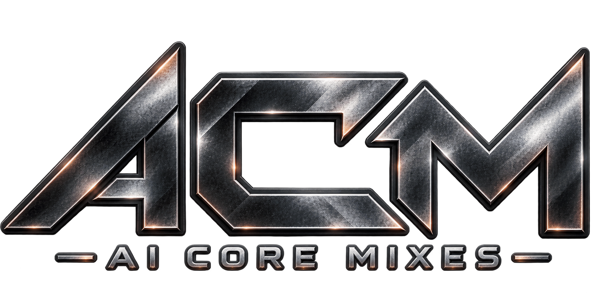

AI Core Mixes — музыкальная лаборатория на стыке жанров и технологий.
Этот канал посвящён поиску идеального симбиоза между живой яростью рока и цифровой мощью EDM. Здесь стираются границы: от классического Industrial Metalstep до безумных сочетаний Rock, Rap и Bass.
Здесь нет коммерции и жёстких графиков. Только личный вкус, ручной отбор и то, что реально качает. Выкладываю годноту по мере её появления.